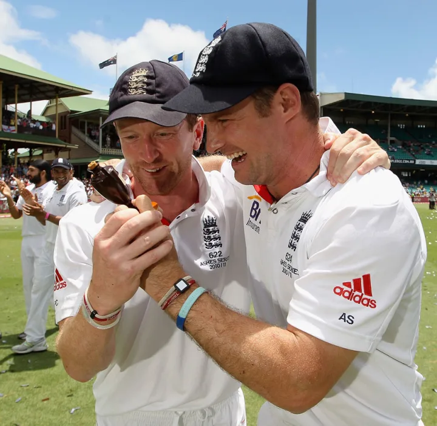

Graeme Swann
Role: Off-Spin Bowler
Bio: Graeme Swann was one of the most successful spin bowlers for England. Known for his ability to turn the ball sharply and his clever variations, he played a vital role in England's Test victories during the late 2000s and early 2010s.
Career Stats
| Format | Matches | Innings | Not Outs | Runs | High Score | Average | Strike Rate | 100s | 50s | Wickets | Best Bowling |
|---|---|---|---|---|---|---|---|---|---|---|---|
| Test | 60 | 98 | 6 | 1709 | 85 | 32.28 | - | - | 34 | 255 | 6/65 |
| ODI | 79 | 74 | 4 | 982 | 56 | 14.20 | 95.88 | - | 4 | 104 | 4/36 |
| T20I | 39 | 33 | 4 | 143 | 34 | 9.48 | 123.48 | - | 1 | 51 | 3/13 |
Memorable Moments
Swann's outstanding performances during the 2009 Ashes series, helping England secure a famous victory.
His clever variations and strategic bowling that turned many matches in England's favor.